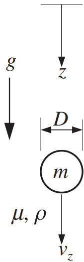

[Q] A solid sphere of mass $m$ and diameter $D$ is released from rest and falls through an incompressible viscous fluid with density $\rho$ and viscosity $\mu$ under the action of gravity $g$. When the $z$ coordinate increases downward, the vertical component of Newton’s second law for the sphere is: $$ m \left( \frac{du_z}{dt} \right) = +mg - F_B - F_D, $$ where $u_z$ is positive downward, $F_B$ is the buoyancy force on the sphere, and $F_D$ is the fluid-dynamic drag force on the sphere. Here, with $u_z > 0$, $F_D$ opposes the sphere’s downward motion. At first the sphere is moving slowly so its Reynolds number is low, but $$ \text{Re}_D = \frac{\rho u_z D}{\mu} $$ increases with time as the sphere’s velocity increases. To account for this variation in $\text{Re}_D$, the sphere’s coefficient of drag may be approximated as: $$ C_D \approx \frac{1}{2} + \frac{24}{\text{Re}_D}. $$ For the following items, provide answers in terms of $m, \rho, \mu, g,$ and $D$; do not use $z, u_z, F_B,$ or $F_D$.

(a) Assume the sphere's vertical equation of motion will be solved by a computer after
being put into dimensionless form. Therefore, use the information provided and the definition
$
t^* \equiv \frac{\rho g t D}{\mu}
$
to show that this equation may be rewritten:
$
\frac{d \text{Re}_D}{dt^*} = A \, \text{Re}_D^2 + B \, \text{Re}_D + C,
$
and determine the coefficients $A, B,$ and $C$.
(b) Solve the part (a) equation for $\text{Re}_D$ analytically in terms of $A, B,$ and $C$ for a sphere that is initially at rest.
(c) Undo the dimensionless scaling to determine the terminal velocity of the sphere (from the part c) answer as $t \to \infty$).